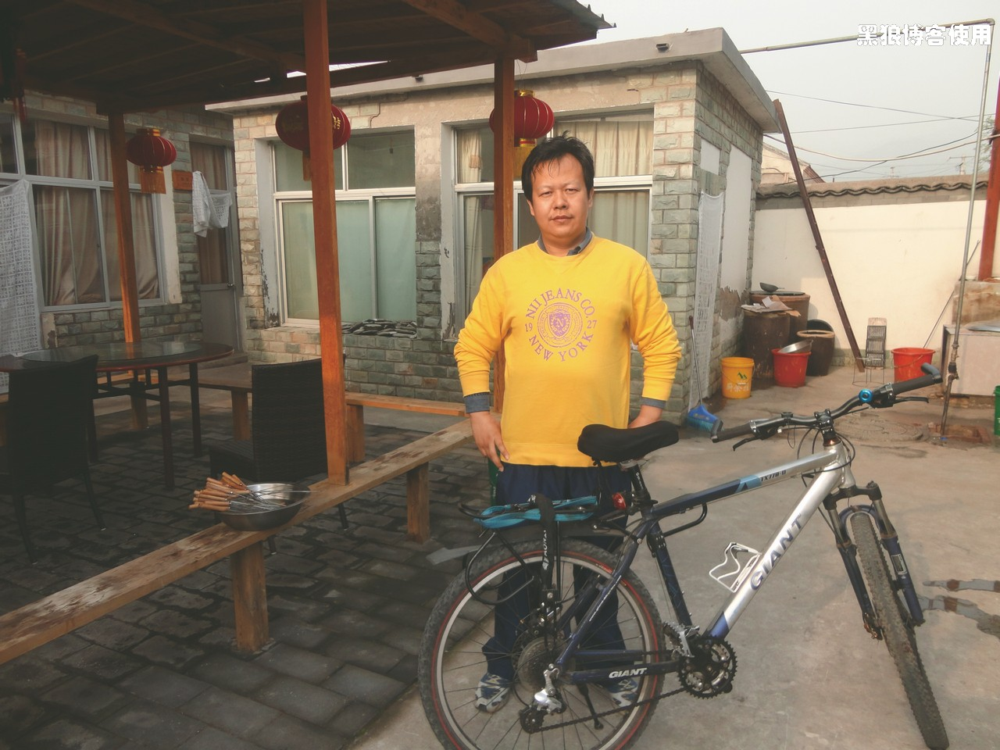
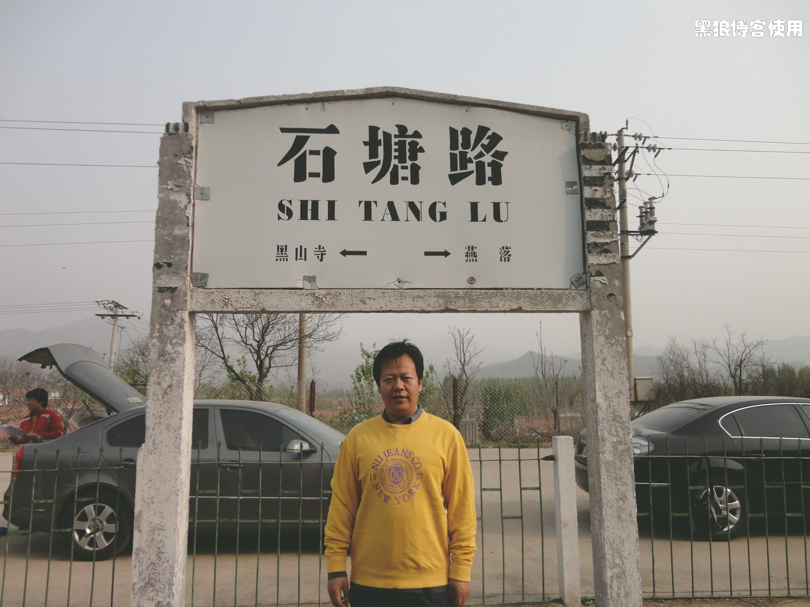
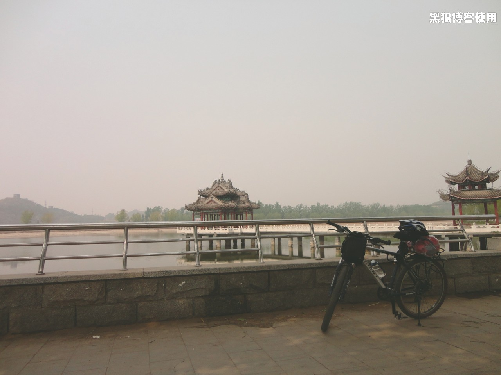
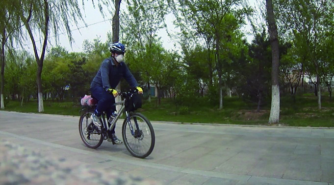
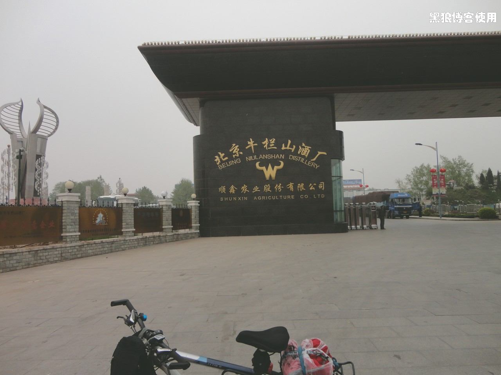
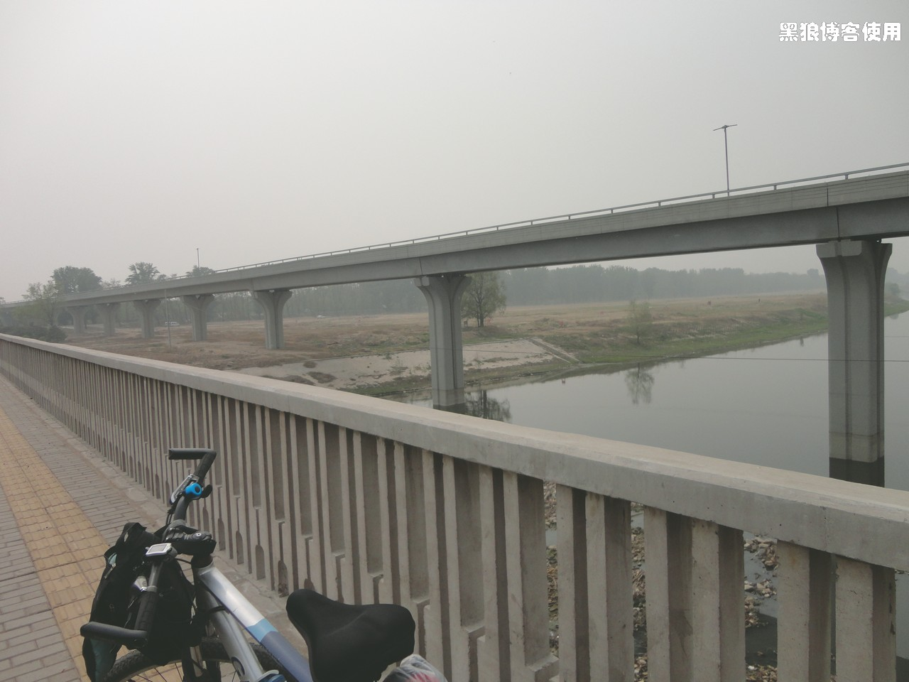
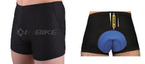

黑狼语录：
- 饱满的热情，与大无畏的精神，让我坚持到了最后。
- 现在回想起来，我还觉得自己很坚强。哈哈。
最终，我大叫着冲到住宿农家院的时候，已经是晚上 7 点半左右了。大家还没有吃饭，这次不算晚。
看了一下码表，总共 114 公里，最大时速 47.3。高兴、吃、喝、酸痛。
晚上的热炕还是非常的舒服，尽管我夜里痛醒了好几次。屁股不痛，腿痛。第二天一早，6 点半就起来了，感觉了一下，除了腿还痛外，其他地方均好。出去照几张照片。
50 米处有一个不知道是否有火车停靠的小车站，居然还有人问我哪里有售票处，呵呵，我也没找到。
来个正面的照片，背景中是胡有理。
吃过早饭，9 点钟，别人都去逛什么桃园谷了，我自有我的乐趣，骑车出发，回京。
现在想起来，除了睡一觉外，我基本都是在路上，我喜欢路上的感觉。 回去的路居然有点顶风，骑行了大概 30 分钟，腿终于不再痛了，感觉很舒爽了。一开始的山路让我再次体验到了上坡的剧痛，即使我呀呀呀大叫，也还是有 3 个大坡坚持不下来，最后推着自行车走上去的。下坡的风驰电掣的感觉，非常的舒服和刺激，耳边是呼呼的风声和吱吱的轮胎磨擦路面的声音。不过，最大的时速还是没有超过我昨天的 47.3 公里 / 小时。
都说好马不吃回头草，回来时特意选择原来设计的路线。看到一条小河，还以为是潮白河，应该不是。小休。
路过野花遍地的小路的时候，碰到一个父亲带着 12 岁左右的男孩，也在单车飞奔。不过比我的时速 26 公里还是慢了不少，我酷酷的擦身而过，那个小男孩立刻大叫：“爸爸，加速，快点！”。呵呵 ~~。我又继续 15 分钟后，无名小桥边休息。
这条路线人车很少，景致不错，到了潮白河，看了眼地图，接下来要沿河走 20多公里，大概 1 小时。唉，悲催呀，地图本来是按照去密云的顺序排列，回来才用上，一不留神，看反了，应该右拐，我却拐向了左侧。
这条小路，越走越幽静，居然后来都是石板路了，我也把相机放在路边台子上，给自己拍了一张照片。唯一的骑行中英姿。
15 分钟后，感觉不对，又把地图拿出来看了看，当时惊得我差点翻倒在路边。顺势开始吃东西休息。（走错路了）
修正路线后，顶着小风，走上了漫漫的 20 公里沙子路，阳光很足，路上基本没有行人和车辆。
尽管是沿着潮白河，不过已经没有了水，更加的显得热、晒。到了这条路尽头，才知道为何车辆稀少，原来还在修路，看来网上的地图也要谨慎用之。
出了那段漫长的河边路，居然到了牛栏山酒厂，必须得来张照片。
看到了六环的标志，我还是小激动了一下，不过，没走多远，看到距离五环居然还有 15 公里，妈呀，这两环怎么这么远呢。
又回到了天竺附近的那个无名桥上，大休，尽管有点晒，不过跟腿的酸痛还有屁股的痛比起来，已经不是问题了。
回京的路上，缺少了照相的兴致，闷头飞奔。我还是保持 40 分钟左右休息 5分钟，1 个半小时左右休息 10 分钟。每次休息完后，
再骑上单车时，都是两腿酸痛，每次都是要骑行 5 至 10 分钟，腿才不再酸痛，也不知道这种现象在体育方面怎么称呼。
尽管我使用了我的秘密武器，可是我的屁股还是非常的痛，而且有点磨破皮了。
先展示一下我的秘密武器
哈哈，女同志是不是感到陌生而又熟悉呢？这就是我的秘密武器，咱是低调的人，外面穿的太鲜艳不是咱的风格，哈哈，不过，咱也要充分准备。
屁股还是有点破皮，我认为是出汗过多，导致垫子不柔软所致。各位有什么好的建议不要藏私啊，路上我也思索了半天，想到了一个办法大家看看是否可
行，那就是用痱子粉。
除了腿和屁股，第三个疼痛无比的是手，手也承担了部分身体的重量，后来虽然变化了很多姿势，效果不大，还是疼。
下午 4 点半左右，终于抵达了家。开车的和坐车的在 3 点钟开始回返，居然到了晚上 7 点多才回到家，也不比自行车快多少。第一次没经验，我的自行车轮胎是那种土路适用的，阻力比较大，下次一定要换成细、平纹的。
返程共骑行了 107 公里，两天总共 220 公里（密云县城内没有计算入内）。晚上躺在床上，痛并快乐着。